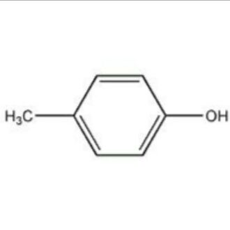

| SovietWatcher 丨苏维埃守望者 | |
|---|---|
|  | |
| 头像 | |
| 群昵称 | 不在 |
| 贴吧ID | 苯醇-◎ |
| STEAM ID | 我的steam |
| 其它联系方式 | *QQ:1453156518,
|
| 主要编写内容 | 我的贡献 |
这不是Paradox官方成就！
对于这些成就也可以在我的个人群734795191讨论，请不要擅自在其他地方（例如parawiki官方群）讨论这些成就，更不要上传有关这些内容的文件等
| 成就 | 开始条件 | 完成需求 | 备注 | 达成 | 难度 | |
|---|---|---|---|---|---|---|

legitimism Emperor 帝统 使用蒙费拉托开局，成立拜占庭帝国 |
|
|
|
困难 | ||

Giustiniani's Revenge 朱斯蒂尼亚尼的复仇 作为热那亚，拥有君士坦丁堡并且奥斯曼不拥有任何贸易中心 |
|
|
|
困难 | ||

Another Classic Story 另一个经典的故事 以卡拉巴赫开局，重建亚美尼亚 |
|
|
卡拉巴赫是开局唯一一个亚美尼亚文化的国家。 | 困难 | ||

Gothic Invasion 重回故土 用狄奥多罗开局拥有哥特兰并将其转化为哥特文化。 |
成立其它国家会阻碍这个成就 | 困难 | ||||

Exodus? 入埃及记 以塞米恩开局拥有埃及及马什利克地区并将其转为犹太教。 |
成立其他国家会妨碍这个成就。
|
困难 | ||||
File:东游记.
The journey to the east 东游记 使用章普尔开局，占领长安 |
|
|
|
困难 | ||
File:直至克里姆林宫墙.
Up to the Kremlin Wall 直至克里姆林宫墙 使用西伯利亚开局，占领俄罗斯，乌拉尔，西西伯利亚及东西伯利亚地区的所有省份 |
|
|
困难 | |||
File:茶马古道.
Tea-Horse Road 茶马古道 成立吐蕃并使全球贸易思潮在拉萨节点产生 |
|
|
极难 |